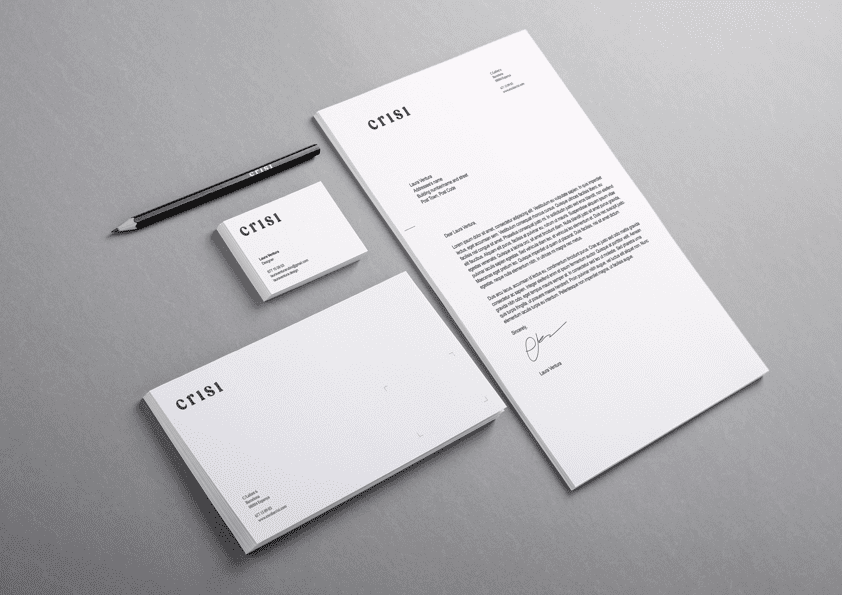
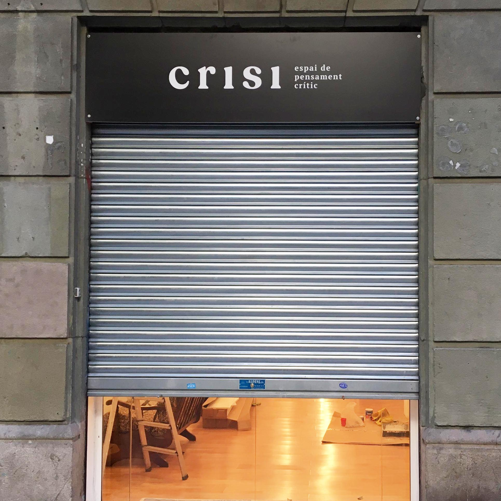

REFERENTS
The logo takes the typographies and textures of old books as a reference. I wanted to create an image that could resonate with a public that can have a very classic taste but also has a critical set of mind.
COLOURS
I created a rather classic logo to match the taste of the school's public, but I wanted to use colours to make the overall image of the school pop up: they offer courses that challenge mainstream narratives, so I thought they needed a bright, punching colour to communicate their philosophy as a cultural project. That colour stains the courses'images as well as the pictures of the school's cultural referents used in social media, posters and websites.
APPLICATIONS
As a cultural organization, they needed
to have a versatile image, that could
adapt to many formats.
Scroll to see some of the applications.


